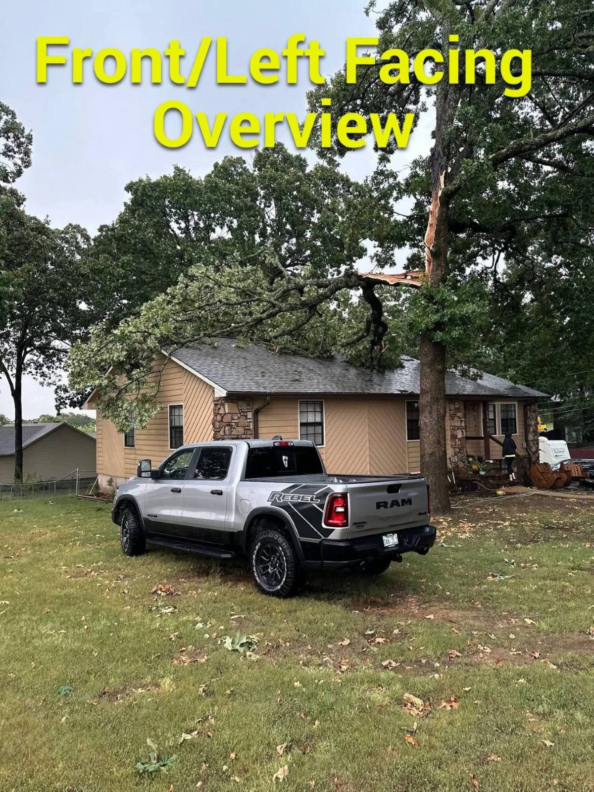
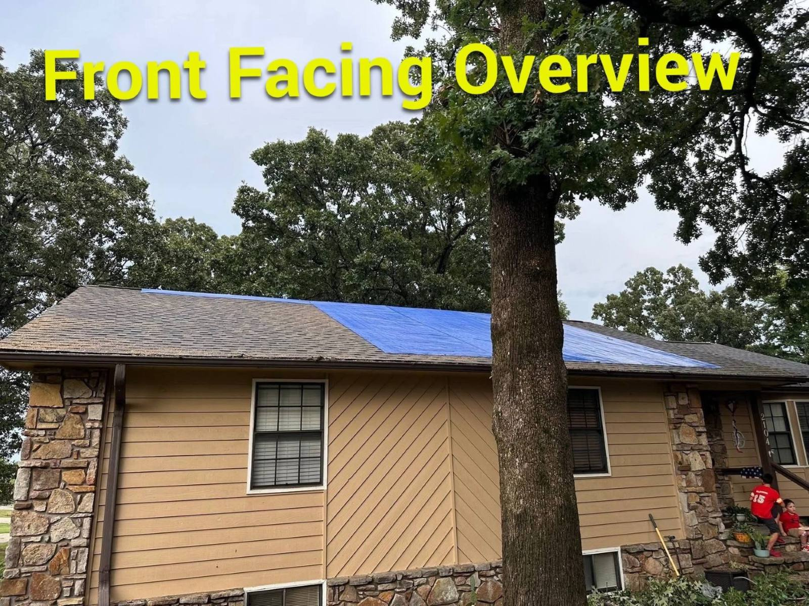
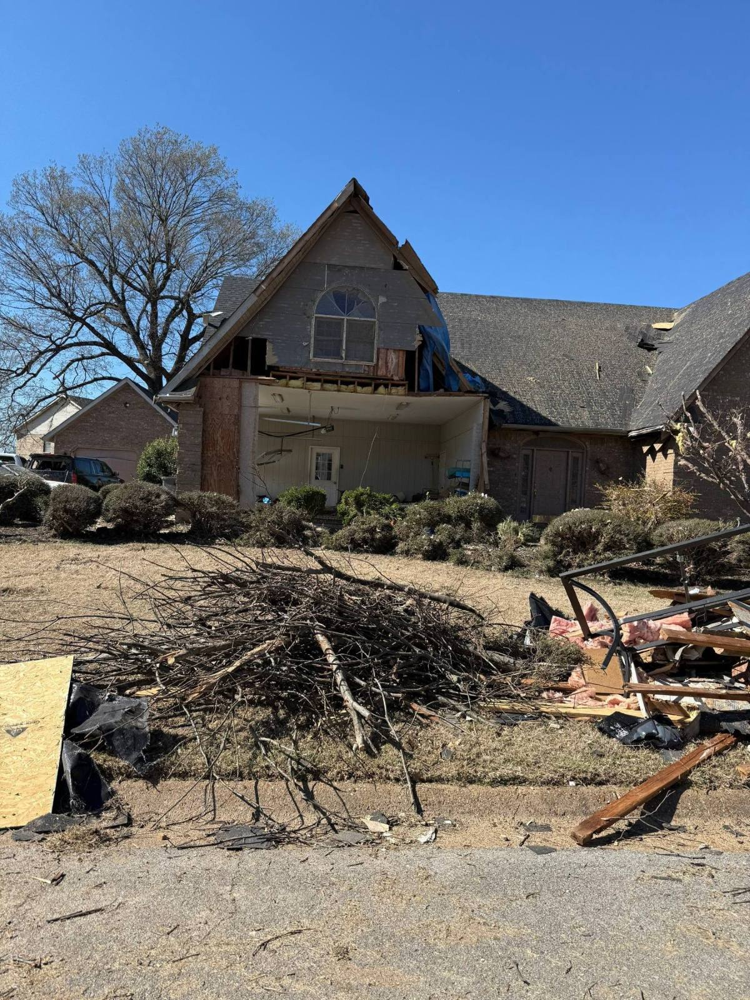

Protect People First
Keep people away from electrical hazards, unstable building components, contaminated materials, standing water, broken glass, active fire conditions, and areas that may no longer be safe to enter.
When a home or commercial building is damaged, the property owner should not have to coordinate one company for emergency work, another for inspection, and several more for repairs. Crain Bros Inc manages the complete restoration. We respond to immediate property needs, inspect and document the damage, determine what must be cleaned or removed, develop the restoration plan, complete the required trade work, and carry the project through final inspection and documentation. Family owned and operated since 1984, we restore residential and commercial property across Northeast Arkansas.
Damage can leave a property owner trying to make several decisions at once. This guide explains the immediate priorities and the information that helps move a damaged building toward a complete restoration.
Discuss the Damage to Your PropertyKeep people away from electrical hazards, unstable building components, contaminated materials, standing water, broken glass, active fire conditions, and areas that may no longer be safe to enter.
Arrange emergency property protection when water is still entering, the building is open to weather, materials remain wet, or damaged openings leave the property unsecured.
Photographs, measurements, moisture readings, affected-area records, and written observations help establish what happened and what the restoration must address.
Visible damage may continue behind walls, above ceilings, beneath flooring, inside insulation, through mechanical systems, or into adjoining rooms and assemblies.
The restoration should address the condition that damaged the property as well as the materials and building systems affected by it.
Some materials can be cleaned, dried, or restored. Others must be removed so concealed damage can be reached and the remaining structure can be treated properly.
Drying, cleaning, and remediation should be evaluated before new finishes conceal the work area. Verification gives the rebuild a sound starting point.
The scope should connect emergency work, inspection findings, selective removal, cleaning or remediation, drying when required, repairs, trade coordination, code requirements, reconstruction, and final inspection.
The property owner should receive organized information showing documented conditions, the approved work, project progress, completed restoration, and final property conditions.
Every damaged property is different, but a complete restoration follows a deliberate path. Some projects need every step while others need only the work supported by the actual conditions.
Plan the Complete RestorationIdentify active hazards, continued water entry, open building areas, unstable components, and other immediate conditions. Emergency protection may include water removal, board-up, roof tarping, temporary enclosure, access control, or stabilization.
Inspect the affected rooms, building systems, structural components, exterior envelope, contents, and accessible concealed areas to establish what is damaged and how far the damage extends.
Record photographs, measurements, readings, affected areas, material conditions, and inspection findings. Organize that information so the property owner can understand the condition and the work being recommended.
Determine how the damage occurred, how it moved through the property, and which connected assemblies or systems must be addressed so the restoration does more than cover the visible symptom.
Develop the restoration around the verified conditions. The plan coordinates mitigation, selective removal, cleaning or remediation, drying when required, code considerations, trade dependencies, materials, repairs, reconstruction, inspections, and documentation.
Remove materials that cannot be restored and open the areas needed to reach concealed damage. Controlled removal protects unaffected areas while preparing the property for cleaning, drying, remediation, and repair.
Clean affected surfaces, address residue or contamination, correct moisture-related conditions, and dry materials that will remain. The exact work depends on whether the property was affected by water, fire and smoke, mold, storm-created openings, or more than one condition.
Evaluate readings, cleaned surfaces, remediated areas, exposed assemblies, and remaining materials before reconstruction begins. Independent testing may be coordinated when the project requires it.
Complete the approved framing, roofing, siding, window, door, insulation, drywall, flooring, painting, cabinetry, mechanical, electrical, plumbing, and finish work needed to restore the property.
Review the completed work, address remaining project items, document the repaired and reconstructed conditions, and provide the property owner with the project information developed through the restoration.
Water can move beyond the room where it first became visible. The restoration must stop the source, establish the affected area, remove materials that cannot remain, dry the structure, and repair the property after drying is verified.

Standing water requires prompt removal and a broader inspection of the affected structure. The restoration continues by documenting moisture, evaluating materials, drying what can remain, and planning the necessary repairs.

Drying equipment is arranged around the actual affected materials. Moisture readings and property conditions guide the work until the materials that will remain are ready for restoration.

Repairs begin after the damaged area has been opened, the underlying condition has been addressed, and the remaining structure is ready to be enclosed again.
Fire damage restoration may begin with emergency protection and continue through inspection of concealed structural damage, cleaning, restoration design, repairs, and reconstruction.

Emergency board-up helps secure the property while the affected areas are inspected, documented, cleaned, and incorporated into the restoration plan.

Controlled opening can reveal damage that was not visible from the finished surface. The exposed condition informs cleaning, material-removal, structural, and reconstruction decisions.

Reconstruction follows investigation, removal, cleaning, code review, restoration design, and verification of the remaining structure.
Storm damage can leave the structure exposed while also affecting the roof, framing, exterior systems, and interior spaces. Emergency protection and a complete inspection establish the path to permanent restoration.

Tree impact can affect roofing, decking, framing connections, ceilings, and interior finishes. The restoration follows the damage through the connected structure.

Temporary roof protection helps prevent additional weather entry while inspection, documentation, restoration design, material planning, and permanent work move forward.

Severe wind can affect several building systems at once. The inspection considers the roof, walls, framing, openings, attached components, utilities, and interior spaces before restoration decisions are made.
Property damage rarely stays in one neat category. A storm-created opening can lead to water damage inside the building. Fire suppression can leave parts of the property wet. A leak that remains active can contribute to mold growth. We inspect how the conditions connect, determine what the property actually needs, and organize the restoration so one part of the work does not overlook another.
Talk About Your Restoration NeedsWater removal, moisture documentation, selective removal, structural drying, cleaning, repairs, and reconstruction based on the actual affected materials and building systems.
Learn moreEmergency protection, fire and smoke damage investigation, residue cleaning, odor work, restoration design, structural repairs, and reconstruction.
Learn moreEmergency weather protection, inspection, mitigation, repairs, and reconstruction for property damage caused by wind, hail, tornadoes, falling trees, and water entry.
Learn moreMoisture-source investigation, containment, removal or remediation, cleaning, verification coordination, corrective work, and restoration of affected areas.
Learn moreContents inventory, cleaning, pack-out and storage, deodorization, document recovery, and media recovery for affected personal property.
Learn moreRestoration is easier to manage when one contractor remains responsible from the first response through the final inspection. Crain Bros Inc connects emergency protection, inspection, documentation, mitigation, cleaning, drying, verification, repairs, and reconstruction so the property owner is not left coordinating separate portions of the same project.
The work is planned around the actual property conditions and carried forward as one restoration. We coordinate the required building trades, inspections, materials, and project sequence while keeping responsibility for the approved work with Crain Bros Inc.
Start the Restoration ConversationRestoration work must fit the building that exists today, including the requirements that apply when damaged assemblies are opened, repaired, or rebuilt. We account for applicable building-code provisions, permit requirements, required inspections, manufacturer instructions, and the sequence needed to complete the approved work properly.
The restoration plan also considers jobsite safety throughout demolition, cleaning, drying, structural work, and reconstruction. Work practices, access controls, protective measures, and hazard planning are organized around the conditions at the property and applicable OSHA workplace-safety requirements.
Crain Bros Inc works on properties involved in insurance claims as a contractor. We inspect and document the damage, property conditions, project scope, work progress, repairs, reconstruction, and completed property conditions. That documentation is provided to the property owner for use on the property owner's own behalf.
A complete restoration may involve emergency work, investigation, damage-specific services, reconstruction management, and several building trades. These related services connect the property owner to the existing service pages that may support the approved scope.
Emergency property damage mitigation can secure openings, reduce continued exposure, remove water, and stabilize immediate conditions before permanent restoration begins.
Learn moreInspection and diagnostics document visible damage, investigate concealed conditions, and establish the information needed to design the restoration.
Learn moreProperty inspection records affected areas, building systems, material conditions, and the visible and accessible extent of damage.
Learn moreBuilding consulting helps property owners review difficult conditions, conflicting recommendations, proposed scopes, and repair-planning questions.
Learn moreComplete water restoration connects emergency response, source investigation, selective removal, drying, repairs, and reconstruction.
Learn moreFire restoration connects emergency protection, investigation, cleaning, restoration design, structural work, and reconstruction.
Learn moreStorm restoration connects emergency weather protection, inspection, mitigation, exterior work, structural repairs, and interior reconstruction.
Learn moreMold restoration addresses moisture conditions, containment, removal or remediation, cleaning, verification, and corrective work.
Learn moreContents services include inventory, cleaning, pack-out and storage, deodorization, document recovery, and media recovery.
Learn moreGeneral contracting coordinates reconstruction, code requirements, trade dependencies, inspections, scheduling, and completion.
Learn moreRoofing work restores damaged roof coverings, underlayment, flashing, decking, penetrations, and related weather-protection details.
Learn moreSiding work restores damaged exterior cladding, trim, weather-resistant layers, transitions, and connected wall components.
Learn moreGutter work restores roof-drainage components that move water away from the roof edge, exterior walls, and foundation.
Learn moreMasonry work addresses damaged brick, block, mortar, veneer, chimneys, and related assemblies included in the restoration scope.
Learn moreDeck construction, replacement, and structural repair.
Learn moreHVAC work addresses affected equipment, ductwork, controls, insulation, drainage, ventilation, and connected mechanical components.
Learn morePlumbing work corrects damaged or failed supply, drain, fixture, and connected water-system components included in the project.
Learn moreElectrical work addresses affected wiring, devices, panels, fixtures, circuits, and related safety or code requirements.
Learn moreFlooring work removes affected materials, prepares the substrate, and restores the approved floor system after underlying conditions are resolved.
Learn morePainting completes prepared interior and exterior surfaces after damaged materials, moisture conditions, and repairs have been addressed.
Learn moreTrim carpentry restores baseboards, casing, moldings, doors, and finish details removed or damaged during restoration.
Learn moreCabinetry work removes, repairs, replaces, and reinstalls affected cabinets as required by the approved restoration scope.
Learn moreCountertop work restores affected surfaces and coordinates removal or installation with cabinetry, plumbing, walls, and finishes.
Learn moreFraming work restores structural and nonstructural wall, floor, ceiling, and roof components identified in the restoration design.
Learn moreConcrete work restores slabs, foundations, walks, pads, and other concrete components included in the project scope.
Learn moreWindow and door work restores damaged openings, frames, glazing, flashing, seals, hardware, trim, and weather protection.
Learn moreInsulation work removes affected material and restores the approved thermal or sound-control assembly after concealed conditions are resolved.
Learn moreDrywall work restores walls and ceilings after the structure is dry, damaged materials are removed, and concealed work is complete.
Learn moreCrain Bros Inc is family owned and operated and has served Northeast Arkansas since 1984. Call to discuss the current property condition, immediate needs, inspection, restoration planning, repairs, and reconstruction.
Get Help Restoring Your PropertyYes. Crain Bros Inc can coordinate emergency property protection, inspection, documentation, mitigation, cleaning or remediation, structural drying when required, repairs, reconstruction, final inspection, and completion documentation as one connected project.
Keep people away from unsafe areas and stop continued damage when it can be done safely. Emergency protection may be needed when water is still entering, the building is open to weather, materials remain wet, or damaged openings leave the property unsecured.
The inspection considers visible conditions, accessible concealed areas, measurements, moisture readings when applicable, affected materials, connected building systems, and the path the damage may have followed through the property.
No. The decision depends on the material, extent of damage, ability to clean or dry it, structural condition, contamination, code requirements, and whether it can remain as part of a sound restoration.
New finishes can conceal moisture, residue, contamination, or damaged assemblies. Verification provides a checkpoint before the property is enclosed and finished again.
Yes. Crain Bros Inc restores residential and commercial properties throughout Northeast Arkansas.
Yes. Crain Bros Inc works on properties involved in insurance claims as a contractor and provides project documentation to the property owner for use on the property owner's own behalf.
The documentation may include photographs, measurements, readings, inspection findings, affected-area information, project scope, work progress, repairs, reconstruction, and completed property conditions developed during the restoration.
Yes. Applicable code requirements can influence the restoration design, material selection, assemblies, permits, inspections, and sequence of work.
Yes. Crain Bros Inc self-performs the restoration and trade work represented in the approved project scope, keeping scheduling, workmanship, and accountability with one contractor.